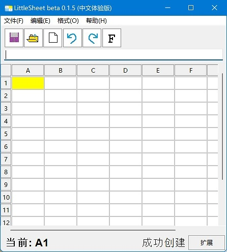

欢迎来到白龙曰的代码库
简介
白龙曰的代码库收集了装机工具、各种编程实例和课程、实用的软件和天文学课程，不仅是学习资源站，也是软件资源站。它包括：Python基础教程、Python高级教程、Python GUI界面基础以及一些其他教程。本站提供dnSpy、Python、Resource hacker等代码开发工具。
开始学习
高效办公
LittleSheet是一个简单的的电子表格软件，支持 LittleSheet XML 格式和逗号分隔值文件格式。当前具备的功能：字体和对齐；自动计算；复制单元格；部分格式转换。未来将实现排序、筛选、图表等功能。你可以在QQ联系作者以参加开发。LittleSheet支持中文和英文，底层代码是Python编程语言编写的（简洁），内核代码是Python演示项目中的spreadsheet.py。
立即下载(x64构建) 获取源码LittleSheet的开发离不开您的体验！
Python项目
由Python重新打造Minecraft! 基于pyglet模块可以实现Minecraft Python Edition，体验效果类似远古版本的Minecraft。你可以下载源代码进行调试，需要Python3.8或更高版本的运行环境，并且已经安装pyglet和easygui。反馈请在QQ联系作者。
在Github查看 显示更多体验Haku OS 2
白龙曰的代码库收集了PPT-OS: Haku OS 2。全新的UI设计，交互式组件，3D视图等功能。内置应用程序有宇宙沙盘、LittleSheet、记事本、应用商店等。
了解更多本站的建设未完成，请积极提出建议！